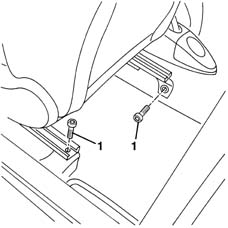
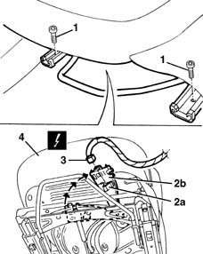
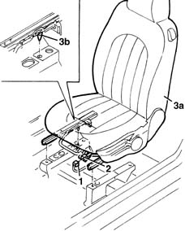
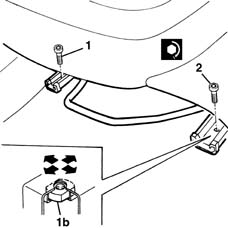
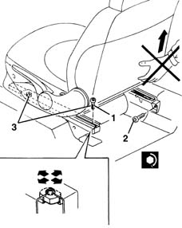

7045A13 front seat with side bag r r
- Path
- Procedures > 70 FITTINGS > 7045 FRONT SEATS > 7045A front seat assembly > 7045A13 front seat with side bag r r
- Kind
- repair procedure (removal / refitting; the operation number is the code)
- Applies to
- all engines; all production periods
- Interactive page
- https://sloeber94.github.io/elrnDB-lYpsln/en/#/2429607
Applies to: all engines; all production periods
 Removing
Removing
 Refitting
Refitting1. Move the seat fully forward and undo the rear bolts.

Applies to: all engines; all production periods
1. Move the seat fully back and undo the front bolts.
2. Release the retainer (2a) and rotate the connector support (2b) into an accessible position.
3. Disconnect the electrical connection.
 | Name | Connector |
|---|---|---|
3 | Driver's Side Bag |
| Name | Connector |
|---|---|---|
3 | Passenger Side Bag |
4. Remove the seat.

Applies to: all engines; all production periods
Refitting
RemovingCheck that the seat and the guides are not damaged.
1. Connect the electrical connections .
2. Rotate the connector mounting bracket and engage the retainer.
3. Place the seat (3a) in its housing on the floor of the vehicle. Ensure it is fully back on the guides and engage locating pin (2b).

Applies to: all engines; all production periods
1. Screw on and tighten the inner front bolt.
 | Fastening | Component | Ø | Value (daNm) |
|---|---|---|---|---|
1 | Bolt | FRONT SEAT ASSEMBLY. | M8 | 2.5 |
2. Screw on and tighten the outer front bolt.
| Fastening | Component | Ø | Value (daNm) |
|---|---|---|---|---|
2 | Bolt | FRONT SEAT ASSEMBLY. | M8 | 2.5 |

Applies to: all engines; all production periods
Slide the seat fully forward. Check that the elements for both guides engage simultaneously.
1. Screw on and tighten the outer rear bolt.
| Fastening | Component | Ø | Value (daNm) |
|---|---|---|---|---|
1 | Bolt | FRONT SEAT ASSEMBLY. | M8 | 2.5 |
2. Screw on and tighten the inner rear bolt.
| Fastening | Component | Ø | Value (daNm) |
|---|---|---|---|---|
2 | Bolt | FRONT SEAT ASSEMBLY. | M8 | 2.5 |
3. Check that the seat slides correctly. If there is lengthwise clearance for the guide attachment, loosen the outer bolts; slide the seat several times, then tighten the bolts to the recommended torque.

Topics linked from this page (2)
Topics that link to this page (8)
- 5580C86 side bag wiring harness (one) lh or rh - r r or replace
- 7040L10 cabin floor carpet - r r
- 7045A14 Front seat CUSHION ASSEMBLY (one), left or right - R.R.
- 7045A60 front seat lift device - r r
- 7045A71 front seat support/guide - driver`s side with lift device - r r
- 7045A73 front seat mount/guide - passenger`s side r r
- 7045D10 Front seat TRIM, left or right - R.R .
- 7045D20 Front seat CUSHION COVER, left or right - R.R .